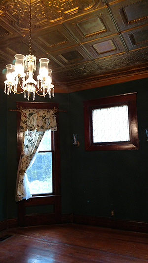

Reich House
Reich House is an old treasure in the city of Aberdeen MS. It was built circa 1902 and is on the National Register of Historic Places. She stands tall and proud on a slight hill on S Franklin Street. The home was originally built by Walter S Carlton and his wife Claudia Harrison Carlton. Their family name is proudly engraved in the cement at the entrance of the steps on the street. Walter Carlton was a prominent politician and business owner in Aberdeen. He was an Alderman for 25 years and was a Selectman. He is among the names engraved on the cornerstone of Aberdeen City Hall. Mr Carlton died in the house on October 27th, 1936. His wife passed in June 1944. Both their funerals were conducted in the house - an obvious sign that the house was so important them.
My name is Reich - the new owner of the house. When I first viewed the home, I had planned to have a simple bed and breakfast. While viewing it, I could feel a presence. When entering the grand dining room, I felt inspired. The inspiration continued after I had left the house. It was much like a message. The message was that my plans should revolve around the grand dining room. It should be used as a seance room to contact those who have passed into the spirit world.
My first plan was to contact a paranormal investigative team. My first contact was with PRISM paranormal investigations in Amory Mississippi. They came to my house on several occasions. On one night, while two of the team members and I sat on the staircase, we heard the singing spirit. Her vibrata voice could be heard in the upstairs bathroom. All three of us heard the singing. On another night, from an upstairs window on the staircase, one of the team members saw a white, ghostly man walking up my driveway. On one of the visits, we used a spirit box as I conducted somewhat of a seance in the Seance Room or grand dining room in my house. We heard the voices of a woman, a man, and a child. The man's voice eventually spoke, "Walter".
PRISM encouraged me early on to open my house to the public in the last week of October. We will take small groups on a tour of Reich House. People will get a chance to use professional paranormal equipment to detect the spirits that reside in this house. If the spirit moves me, I might conduct a seance for a small while each evening. I welcome you to come to Reich House and see what you experience. Clairvoyants, channelers, mediums, paranormal investigators, and the rest of the public are very welcome to attend. Admission is $10 per person and each tour lasts up to an hour. Join us, won't you?
©2017